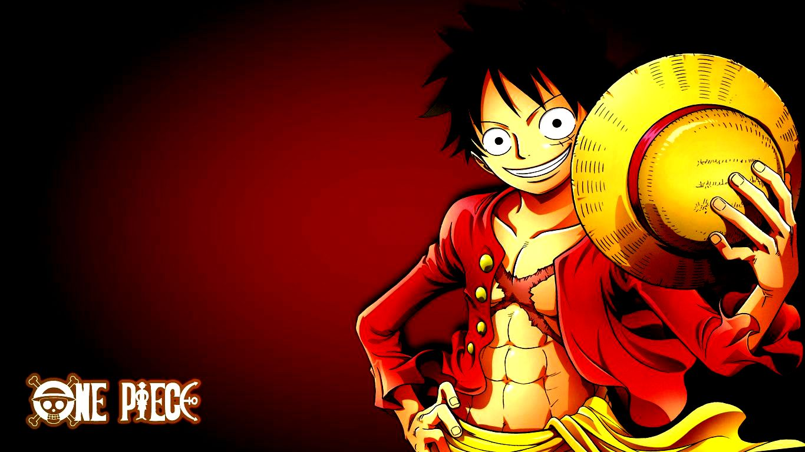
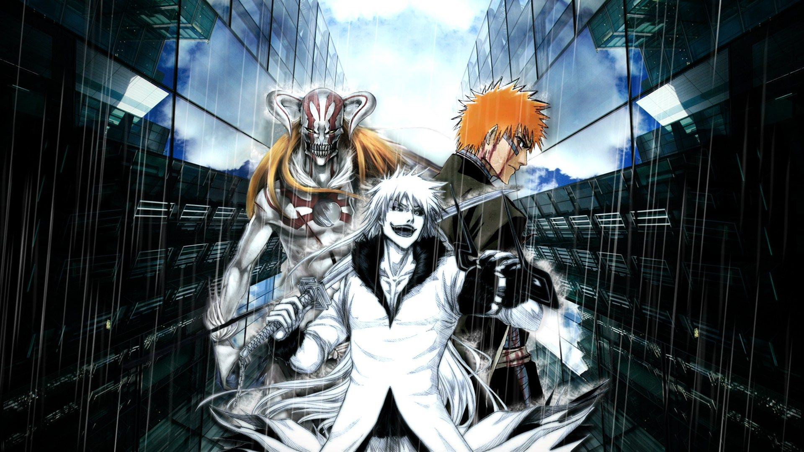
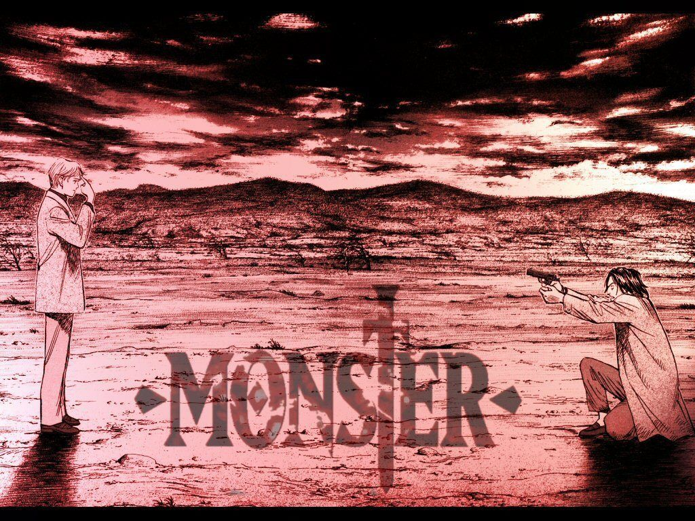
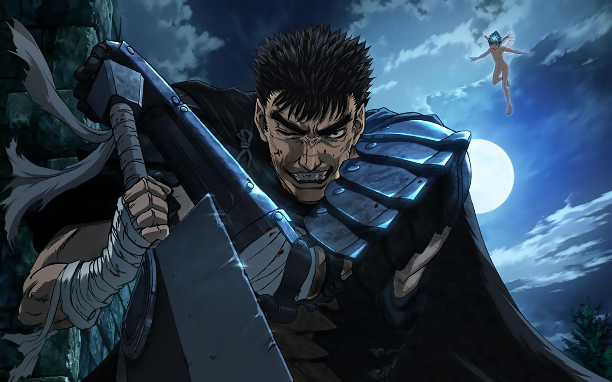
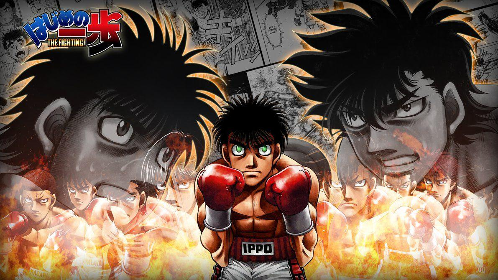

Animeflix is a free site to watch anime and you can even download subbed or dubbed anime in ultra HD quality without any registration or payment. By having No Ads in all kinds, we are trying to make it the safest site for free anime.
One Piece
Monkey D. Luffy wants to become the King of all pirates. Along his quest he meets: a skilled swordsman named Roronoa Zolo; Nami, a greedy thief who has a knack for navigation; Usopp, a great liar who has an affinity for inventing; Sanji, a warrior cook; Chopper, a sentient deer who is also a skilled physician; and Robin, former member of Baroque Works. The gang sets sail to unknown seas in Grand Line to find the treasure of One Piece.


Naruto
Naruto is a Japanese manga series written and illustrated by Masashi Kishimoto. It tells the story of Naruto Uzumaki, a young ninja who seeks recognition from his peers and dreams of becoming the Hokage, the leader of his village.
Bleach
Ichigo Kurosaki never asked for the ability to see ghosts -- he was born with the gift. When his family is attacked by a Hollow -- a malevolent lost soul -- Ichigo becomes a Soul Reaper, dedicating his life to protecting the innocent and helping the tortured spirits themselves find peace.


Monster
Monster is a Japanese manga series written and illustrated by Naoki Urasawa. It was published by Shogakukan in their seinen manga magazine Big Comic Original between 1994 and 2001, with the chapters collected in eighteen tankōbon volumes.
Berserk(1997)
Berserk, also known in Japan as Kenpū Denki Berserk, is a Japanese anime television series based on Kentaro Miura's manga series of the same name. The series was produced by Nippon Television and VAP, animated by Oriental Light and Magic and directed by Naohito Takahashi.


Hajime No Ippo
Ippo is a high school student that gets bullied on by the kids at his school; when a professional boxer introduces Ippo to the world of boxing, his life changes.